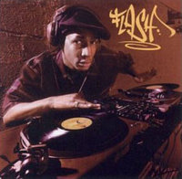
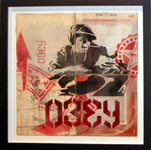

Grandmaster Flash
From The Giant: The Definitive Obey Giant Site
His official bio:
Grandmaster Flash Hip Hop Pioneer - DJ
Beginnings
During hip-hop’s nearly 30-year history, few names have become as well known to music lovers across the globe as that of Grandmaster Flash. Not only is he responsible for inventing the musical genre called Hip Hop, but his pioneering use of the turntables make him the first DJ to play the turntables as a musical instrument, thus helping to elevate the status of the DJ to a masterful, artistic position. He is also responsible for assembling one of the earliest and greatest rap groups of all time – The Furious Five. These are some of the hallmarks of a career which has extended from the Bronx in the early 1970s to all corners of the globe into the 21st century.
Of Bajan decent, Joseph Saddler, professionally known as “Flash,” was born and raised in the Boogie down Bronx, and it was the area’s streets and nightlife that provided his inspirations. He developed his first crush on vinyl when he was just a boy playing with his father's records. By the time he was a teenager, studying electronics and engineering in school by day, he was already spinning records at block parties and in public parks.
Studying one particular DJ, known as Kool Herc, one of his greatest influences apart from his very own father, and monitoring the crowd’s responses, led him to create and elevate this turntable art form as he developed such innovative turntable techniques as rearranging the arrangement of recorded songs and by extending the break in those recorded songs. He did this by using duplicate copies of a vinyl record and by manipulating his wrist and elbow, moving it back and forth. As early as 1971, he was scientifically inventing and demonstrating such methods and concepts he collectively called "The Quick Mix Theory," which encompassed the innovative technique of "Cutting," which laid the foundations for what became known as "Scratching" (along with its many off shoots, "crab scratching," "transforming," and "flaring"), as well as the "Doubleback/Back Door," "Phasing," and "Backspinning." Then came the "Clock Theory," which allowed Flash to find the break of a recorded song quickly by eye, by marking the vinyl with tape or a crayon. This manual display of taking a song apart and rearranging its structure live on stage contributed to the early development and rise of the DJ as a Remixer, Artist, and Producer.
These innovations quickly became recognized worldwide, and put both Flash and the Bronx on the worldwide musical map. Bill Gates, founder and chairman of Microsoft Corporation, recently honored Flash with the DJ Vanguard Award for being the first to utilize the turntables as a musical instrument.
Hip-Hop Culture was created in 1971 by three DJs, Flash being one of them, and then, contrary to popular belief, came the graffiti writers and the breakdancers, and the MCs followed much later. Flash recorded the unique sounds he created, and in 1977 began experimenting and collaborating with local MCs and put together his own group who became known as Grandmaster Flash and the Furious Five. Their reputation grew around Flash’s unrivaled DJ skills and the group’s blending and trading of lyrics. Flash also gained notice for the visually dynamic and acrobatic way he could spin and scratch records using his feet, toes, and elbows.
1981’s The Adventures of Grandmaster Flash on the Wheels of Steel was the first record to feature complex cuts and scratches, and introduced the name Grandmaster Flash as their originator. Following the group’s demise, Flash continued to make his mark by releasing solo albums, and was immortalized in Blondie’s hit song of 1980, Rapture: “Flash is fast, Flash is cool!”
Recent Activities and Accomplishments
Grandmaster Flash has remained one of the world’s most-respected musical innovators by never stopping his touring and performing for appreciative crowds around the world. He played the 1998 Super Bowl, and was invited by comedian Chris Rock to be the musical director for Rock’s groundbreaking HBO-TV series, where Flash could be seen onscreen spinning during the show’s four-year run. He performed for the closing of the Commonwealth Games in Manchester, England in 2002 for more than 40,000 in attendance, which included Prime Minister Tony Blair and Queen Elizabeth, and billions of television viewers around the world.
In 2002, Flash designed and launched the Grandmaster Flash Signature Empath mixer for Rane Corporation, adding to previous endorsements by Louis Vuitton and Helmut Lang (for a signature-logo record carrying case), Sprite, Tommy Hilfiger, Gemini Sound, and Kangol caps.
In recognition of his role in music history, Flash has been invited to contribute artifacts to the Rock and Roll Hall of Fame and Museum in Cleveland, Ohio, and the Experience Music Project in Seattle, WA. Among his many awards are the Pioneer Award from Source magazine, the New Music Seminar Hall of Fame Award, the DMC Hall of Fame Award, and B.E.T.’s Diamond Award. In June 2004, he was inducted into the Bronx Walk of Fame with a plaque dedicated at 161st St. and the Grand Concourse, and a street named after him in New York City.
Flash’s trailblazing sounds were recognized with the 2002 Strut Records release of The Official Adventures of Grandmaster Flash, a critically acclaimed collection of tracks which hark back to the block party tapes and sounds he created early in his career. Also during 2002, the label ffrr released Essential Mix: Classic Edition.
Since 2001, Grandmaster Flash has been a national radio DJ for Sirius Satellite Radio. He hosts his own mix show called "The Flash Mash;" blending pop, rock, jazz, blues, funk, hip hop, r'n'b, reggaeton, break beats, soul, reggae, and other genres of music into one continuous mix. Prior to Sirius, Flash spun on all three major urban stations in NY, which were HOT 97 (97.1FM), WBLS (107.5FM), and Kiss FM (98.7FM).
As a keynonte speaker at the international MIDEM 2004 music conference in France, Flash announced the formation of his new record label, "Adrenaline City Entertainment," by outlining the plans for the label, which include discovering, recording, and releasing music by groundbreaking new talent.
During the summer of 2004, Flash was featured on the cover and in an interview in the new high-end, hardcover cultural magazine, Swindle, whose motto is "timeless content."
In September 2004, Grandmaster Flash was honored at the 7th annual Mix Show Power Summit in Puerto Rico. The Mix Show Power Summit Salute was in recognition of his significant contribution to hip-hop culture, and his dedication to mixshow radio and the art of the DJ.
On October 1, 2004, Flash was presented with a key to the city of Cincinnati, Ohio, by city official "Councilman Smitherman," and honored on October 2nd with "Tha Blast Community Award" for his pioneering contribution to urban arts and culture. The award was presented by musician and local hero Bootsy Collins, who recieved the award in 2003.
During 2004 and 2005, Flash took on the task to educate aspiring youth in the entertainment field. Many schools of different levels were selected to experience a full spectrum lecture and demostration of DJ'ing and its main ingredients. From the technical standpoint of his "instruments" to the actual entertainment in performing, Flash discussed all that is known and needed to be successful in the music industry.
On May 9, 2005, Converse debuted its brand new television commercial during the NBA Playoffs, featuring Grandmaster Flash and Miami Heat basketball player Dwayne Wade, aka "The Flash." Music for the spot was created and produced by Flash.
On June 9, 2005, the Rock and Roll Hall of Fame hosted Grandmaster Flash at the Museum, in Cleveland, where he was presented with a Life-Time Achievement Award, courtesy of the RIAA.
On August 28, 2005, DJ Grandmaster Flash was requested by Diddy to be the DJ for the MTV Video Music Awards in Miami. The event was broadcasted live worldwide.
On September 22, 2005, VH1 honored Grandmaster Flash and The Furious Five for their contributions of adding social consciousness to hip hop. Flash was also honored for his contribution to DJ culture in hip hop. This event too was broadcasted and televised around the world.
And to top it all, DJ Grandmaster Flash and The Furious Five has been nominated for induction into the Rock and Roll Hall of Fame, making them the first DJ and rap group to ever be nominated.
In 2002, Grandmaster Flash released The Official Adventures of Grandmaster Flash. The cover for this album served as the model to Shepard's 2002 print entitled Bring The Noise.
|  |
 |
{kind=link}
{kind=link}
{kind=link}